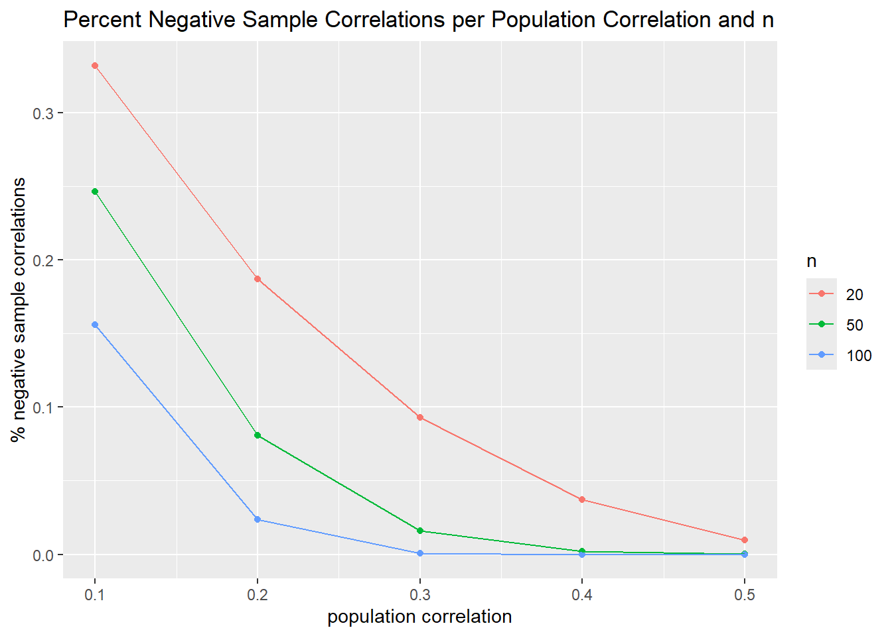

Portfolio 3
Load packages and data
if (!require("ggplot2")) install.packages("ggplot2")
library(ggplot2)
if (!require("MASS")) install.packages("MASS")
library(MASS)
if (!require("tidyverse")) install.packages("tidyverse")
library(tidyverse)set.seed(123)final_simulate_individual_x_y <- function(r,n) {
mean_x_y <- c(0, 0)
cov_matrix <- matrix(c(1, r,
r, 1), ncol = 2)
x_y_data_matrix <- mvrnorm(n = n, mu = mean_x_y, Sigma = cov_matrix, empirical = FALSE)
colnames(x_y_data_matrix) <- c("x", "y")
x_y_data <- as.data.frame(x_y_data_matrix)
df_name <- paste0("individual_x_y_", r, "_", n)
assign(df_name, x_y_data, envir = .GlobalEnv)
calculated_corr <- cor(x_y_data$x, x_y_data$y)
return(calculated_corr)
} simulate_repeated_x_y <- function(r, n) {
correlations <- replicate(10000, final_simulate_individual_x_y (r, n))
correlation_results <- data.frame(id = 1:100, corr = correlations, pop_r = r, n = n)
df_name <- paste0("simulated_r_from_xy", r, "_", n)
assign(df_name, correlation_results, envir = .GlobalEnv)
}Now I’m generating some data sets. Note I could easily change these, depending on what I want to convey.
simulate_repeated_x_y(.10, 20)
simulate_repeated_x_y(.10, 50)
simulate_repeated_x_y(.10, 100)
simulate_repeated_x_y(.20, 20)
simulate_repeated_x_y(.20, 50)
simulate_repeated_x_y(.20, 100)
simulate_repeated_x_y(.30, 20)
simulate_repeated_x_y(.30, 50)
simulate_repeated_x_y(.30, 100)
simulate_repeated_x_y(.40, 20)
simulate_repeated_x_y(.40, 50)
simulate_repeated_x_y(.40, 100)
simulate_repeated_x_y(.50, 20)
simulate_repeated_x_y(.50, 50)
simulate_repeated_x_y(.50, 100)now need to bind the data files .
simulated_data_final_xy <- bind_rows(simulated_r_from_xy0.1_20, simulated_r_from_xy0.1_50, simulated_r_from_xy0.1_100, simulated_r_from_xy0.2_20, simulated_r_from_xy0.2_50, simulated_r_from_xy0.2_100, simulated_r_from_xy0.3_20, simulated_r_from_xy0.3_50, simulated_r_from_xy0.3_100, simulated_r_from_xy0.4_20, simulated_r_from_xy0.4_50, simulated_r_from_xy0.4_100, simulated_r_from_xy0.5_20, simulated_r_from_xy0.5_50, simulated_r_from_xy0.5_100)Adding in the number of negative corrs.
simulated_data_final_xy <- simulated_data_final_xy %>%
mutate (neg_corr_xy = case_when (
corr < 0 ~ 1,
corr >= 0 ~ 0 ))
perc_neg_corr_final_xy <- simulated_data_final_xy %>%
group_by(pop_r, n) %>%
summarize(perc_neg_xy = mean(neg_corr_xy))The last thing is to make some graphs. I’m going to make two types.
One is to make histograms. I’ll do this for just the correlations of .20
simulated_data_final_xy_.20 <- bind_rows(simulated_r_from_xy0.2_20, simulated_r_from_xy0.2_50, simulated_r_from_xy0.2_100)ggplot(data = simulated_data_final_xy_.20, mapping = aes(x = corr)) +
geom_histogram() +
facet_grid (~ n) +
labs(title = "Distribution of Sample Correlations, r = .20") +
scale_y_continuous(name = "Count", breaks = NULL)
The second is to make a line graph for percentage of negative correlations.
ggplot(data = perc_neg_corr_final_xy, mapping = aes(x = pop_r, y = perc_neg_xy, group = n, color = factor(n))) +
geom_point() +
geom_line() +
labs(title = "Percent Negative Sample Correlations per Population Correlation and n",
x = "population correlation", y = "% negative sample correlations", color = "n")